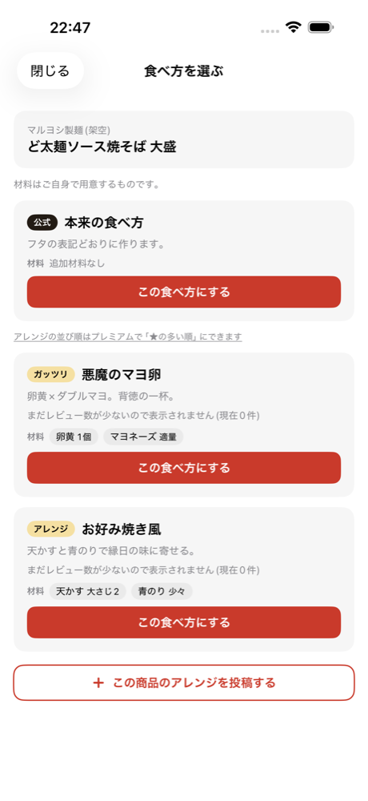
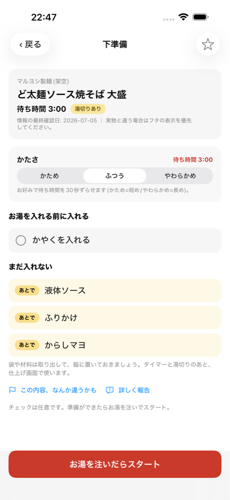
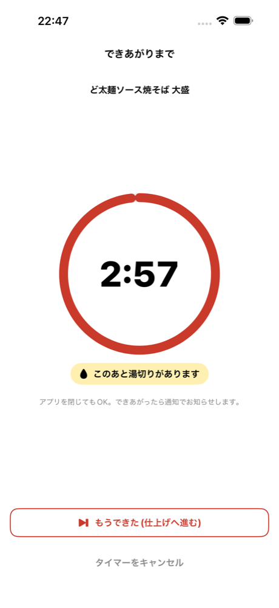
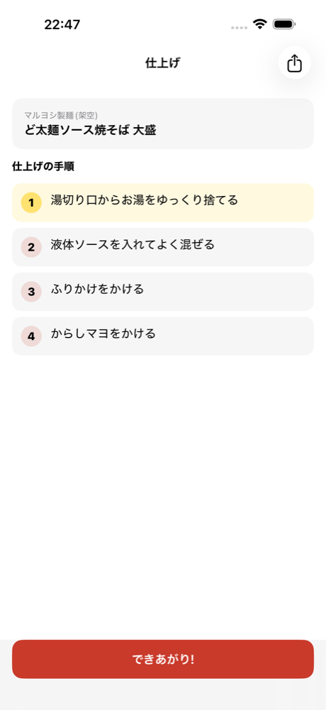

「かやくと液体ソース、どっちが先だっけ」
カップ麺は商品ごとに手順が違います。フタの表示は小さく、お湯を注いだあとに読み返すのは大変です。
めんサポは お湯の前に入れるもの と まだ入れないもの を分けて表示します。入れ違いも入れ忘れも起きません。タイマーは終了時刻で動くので、アプリを閉じても正確です。
読むのではなく、たどる。
カップ麺のバーコードを読むだけ。お湯の前に入れるもの、あとで入れるもの。フタの細かい文字を読み解かなくても、その商品の手順が順番に開きます。
iPhone 対応 ・ 基本機能は無料 ・ 調理はオフラインでも動く
「かやくと液体ソース、どっちが先だっけ」
カップ麺は商品ごとに手順が違います。フタの表示は小さく、お湯を注いだあとに読み返すのは大変です。
めんサポは お湯の前に入れるもの と まだ入れないもの を分けて表示します。入れ違いも入れ忘れも起きません。タイマーは終了時刻で動くので、アプリを閉じても正確です。
フタを読み返さなくていい調理体験にしました。
読み取るだけで、その商品専用の作り方が開きます。商品名やジャンルからも探せます。
「お湯を入れる前に入れる」と「まだ入れない」を別のリストに。入れ違いと入れ忘れを防ぎます。
終了時刻で動くので、アプリを閉じても再起動しても狂いません。できあがりは通知でお知らせします。
湯切りが必要な商品は、待っている間に予告。仕上げの最初のステップにも入ります。
ユーザー投稿のアレンジを選んでそのまま調理。レビュー3件までは星を出しません。
未登録の商品はその場で登録。別の2人が確認すると確定し、みんなが使えるようになります。
商品名は説明用のサンプルです。



